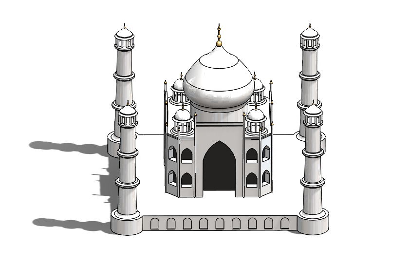
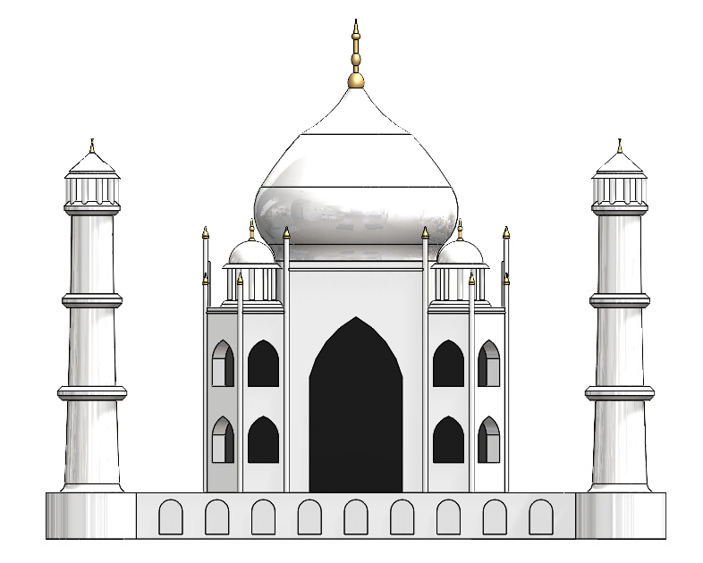

Freshman year · Rose-Hulman
Freshman year · Rose-Hulman
Taj Mahal: CAD model and OpenGL visualization.
A detailed CAD model of the Taj Mahal built for a freshman intro-CAD competition, and then a second life for it: extracting its points and redrawing them in C++ with OpenGL as a continuous line drawing.
The model
During my freshman year in undergrad I made a CAD model of the Taj Mahal for our Intro to CAD class project competition. It was a great project to have fun with and to learn the basics of CAD.
The building is a good subject for learning solid modeling precisely because it is so regular: a central dome over an octagonal chamber, four freestanding minarets, and a plinth, all under strict fourfold symmetry. Getting it right is mostly about building clean, parametric primitives and then mirroring and arraying them, which is exactly the habit an intro CAD course is trying to teach.



Redrawing it in OpenGL
I also made a fun visualization of the Taj Mahal in C++ using OpenGL. This was done by extracting the necessary points from the CAD image, then sorting the points using nearest neighbours to give the drawing effect.
The sorting step is what makes it work. A raw point set carries no notion of order, so plotting it straight produces a cloud, or a mess of lines jumping across the figure. Repeatedly stepping to the closest unvisited point turns that unordered set into a path a pen could plausibly follow, which is what makes the render look hand-drawn rather than plotted. It is a greedy heuristic, so it can strand itself and jump when it exhausts a local cluster, but for a figure this dense the effect reads exactly as intended.
The drawing effect, sped up.